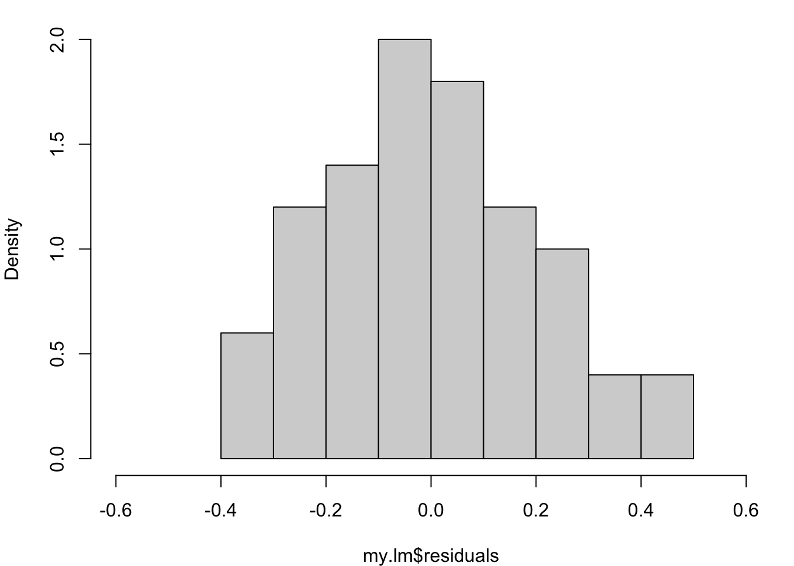

In many fields of application, we might assume the response variable is normally distributed. For example: heights, weights, log prices, etc.
The data1 in Table 2.1 record the birth weights of 12 girls and 12 boys and their gestational ages (time from conception to birth).
Table 2.1: Gestational ages (in weeks) and birth weights (in grams) for 24 babies (12 girls and 12 boys).
Girls
Gestational Age
Birth weight
40
3317
36
2729
40
2935
37
2754
42
3210
39
2817
40
3126
37
2539
36
2412
38
2991
39
2875
40
3231
Boys
Gestational Age
Birth weight
40
2968
38
2795
40
3163
35
2925
36
2625
37
2847
41
3292
40
3473
37
2628
38
3176
40
3421
38
3975
A key question is, can we predict the birth weight of a baby born at a given gestational age using these data. For this we will need to make assumptions about the relationship between birth weight and gestational age, and any associated natural variation – that is we require a model.
First we should explore the data. Figure 2.1 (a) shows a histogram of the birth weights indicating a spread around modal group 2800-3000 grams; Figure 2.1 (b) indicates slightly higher birth weights for the boys than the girls; and Figure 2.1 (c) shows an increasing relationship between weight and age. Together, these suggest that gestational age and sex are likely to be important for predicting weight.
Code
par(mar=c(4,4,0,1))birthweight =read.table("https://richardpmann.github.io/MATH3823/Datasets/birthwt-numeric.txt", header=T)weight = birthweight$weightage = birthweight$agesex = birthweight$sexhist(weight, breaks=6, probability = T, main ="", xlab ="Birth weight (grams)")boxplot(weight~sex, names=c("Girl", "Boy"))plot(age, weight, pch=16, xlab ="Gestational age (weeks)",ylab ="Birth weight (grams)")
(a) Weight distribution
(b) Weight sub-divided by Sex
(c) Relationship beween variables
Figure 2.1: Birthweight and gestational age for 24 babies.
Before considering possible models, Figure 2.2 again shows the relationship between weight and age but this time with the points coloured according to the baby’s sex. This, perhaps, shows the boys to have generally higher weights across the age range than girls.
In these models, \(\texttt{Weight}\) is called the response variable (sometimes called the dependent variable) and \(\texttt{Age}\) and \(\texttt{Sex}\) are called the covariates or explanatory variables (sometimes called the predictor or independent variables). Here, \(\texttt{Age}\) is a continuous variable whereas \(\texttt{Sex}\) is coded as a dummy variable taking the value 0 for girls and 1 for boys; it is an example of a factor, in this case with just two levels: Girl and Boy.
Note that \(\texttt{Model 0}\) is a special case of \(\texttt{Model 1}\) (consider the situation when \(\beta=0\)) and that \(\texttt{Model 1}\) is a special case of \(\texttt{Model 2}\) (consider the situation when \(\gamma=0\)) and finally that \(\texttt{Model 2}\) is a special case of \(\texttt{Model 3}\) (consider the situation when \(\delta=0\)) – such models are called nested.
In these models, \(\alpha\), \(\beta\), \(\gamma\) and \(\delta\) are model parameters. Parameter \(\alpha\) is called the intercept term; \(\beta\) is called the main effect of \(\texttt{Age}\); and is interpreted as the effect on birth weight per week of gestational age. Similarly, \(\gamma\) is the main effect of \(\texttt{Sex}\), interpreted as the effect on birth weight of being a boy (because girl is the baseline category).
Parameter \(\delta\) is called the interaction effect between \(\texttt{Age}\) and \(\texttt{Sex}\). Take care when interpreting an interaction effect. Here, it does not mean that age somehow affects sex, or vice-versa. It means that the effect of gestational age on birth weight depends on whether the baby is a boy or a girl.
These models can be fitted to the data using (Ordinary) Least Squares to produce the results presented in Figure 2.3.
Figure 2.3: Birthweight and gestational age data with superimposed fitted regression lines from various competing models.
We know from previous modules that statistical tests can be used to check the importance of regression coefficients and model parameters, but it is also important to use the graphical results, as in Figure 2.3, to guide us.
\(\texttt{Model 0}\) says that there is no change in birth weight with gestational age which means that we would use the average birth weight as the prediction whatever the gestational age – this makes no sense. As we can easily see from the scatter plot of the data, the fitted line in this case is clearly inappropriate.
\(\texttt{Model 1}\) does not take into account whether the baby is a girl or a boy, but does model the relationship between birth weight and gestational age. This does seem to provide a good fit and might be adequate for many purposes. Recall from Figure 2.1 (b) and Figure 2.2, however, that for a given gestational age the boys seem to have a higher birth weight than the girls.
\(\texttt{Model 2}\) does take the sex of the baby into account by allowing separate intercepts in the fitted lines – this means that the lines are parallel. By eye, there is a clear difference between these two lines but it might not be important.
\(\texttt{Model 3}\) allows for separate slopes as well as intercepts. There is a slight difference in the slopes, with the birth weight of the girls gradually catching-up as the gestational age increases. It is difficult to see, however, if this will be a general pattern or if it is only true for this data set – especially given the relatively small sample size.
Here, it is not clear by eye which of the fitted models will be the best and hence we should use a statistical test to help. In particular, we can choose between the models using F-tests.
Let \(y_i\) denote the value of the dependent variable \(\texttt{Weight}\) for individual \(i=1,\dots,n\), and let the four models be indexed by \(k=0,1,2,3\).
Let \(R_k\) denote the residual sum of squares (RSS) for Model \(k:\)
where \(\hat{\mu}_{ki}\) is the fitted value for individual \(i\) under \(\texttt{Model}\)\(k\). Let \(r_k\) denote the corresponding residual degrees of freedom for \(\texttt{Model}\)\(k\) (the number of observations minus the number of model parameters).
Consider the following hypotheses: \[
H_0: \texttt{Model } 0 \text{ is true}; \hspace{5mm} H_1: \texttt{Model } 1 \text{ is true}.
\] Under the null hypothesis \(H_0\), the difference between \(R_0\) and \(R_1\) will be purely random, so the between-models mean-square \((R_0 - R_1)/(r_0 - r_1)\) should be comparable to the residual mean-square \(R_1/r_1\). Thus our test statistic for comparing \(\texttt{Model } 1\) to the simpler \(\texttt{Model } 0\) is:
It can be shown that, under the null hypothesis \(H_0\), the statistic \(F_{01}\) will have an \(F\)-distribution on \(r_0 - r_1\) and \(r_1\) degrees of freedom, which we write: \(F_{r_0-r_1, r_1}\). Under the alternative hypothesis \(H_1\), the difference \(R_0-R_1\) will tend to be larger than expected under \(H_0\), and so the observed value \(F_{01}\) will probably lie in the upper tail of the \(F_{r_0-r_1, r_1}\) distribution.
Returning to the birth weight data, we obtain the following output from R when we fit \(\texttt{Model } 1\):
Code
# read the data from file into a dataframe called ’birthweight’birthweight =read.table("https://richardpmann.com/MATH3823/Datasets/birthwt.txt", header=T)# fit Model 1fit1 =lm(weight ~ age, data=birthweight)# print the parameter estimates from Model 1coefficients(fit1)
(Intercept) age
-1484.9846 115.5283
Code
# perform an analysis of variance of Model 1anova(fit1)
Analysis of Variance Table
Response: weight
Df Sum Sq Mean Sq F value Pr(>F)
age 1 1013799 1013799 27.33 3.04e-05 ***
Residuals 22 816074 37094
---
Signif. codes: 0 '***' 0.001 '**' 0.01 '*' 0.05 '.' 0.1 ' ' 1
Thus we have parameter estimates: \(\hat\alpha = -1484.98\) and \(\hat\beta = 115.5\). The Analysis of Variance (ANOVA) table gives: \(R_0-R_1 = 1013799\) with \(r_0-r_1 = 1\) and \(R_1 = 816074\) with \(r_1 = 22\).
If we wanted \(R_0\) and \(r_0\) then we can either fit \(\texttt{Model 0}\) or get them by subtraction.
The \(F_{01}\) statistic, Equation 2.2, is then \[
F_{01} = \frac{1013799/1}{816074/22} = 27.33,
\] which can be read directly from the ANOVA table in the column headed ‘F value’.
Is \(F_{01} = 27.33\) in the upper tail of the \(F_{1,22}\) distribution? (See Figure 2.4 and note that 27.33 is very far to the right.) The final column of the ANOVA table tells us that the probability of observing \(F_{01} > 27.33\) is only \(3.04\times10^{-5}\) – this is called a p-value. The *** beside this p-value highlights that its value lies between 0 and 0.001. This indicates that we should reject \(H_0\) in favour of \(H_1\) – there is very strong evidence for the more complicated model. Thus we would conclude that the effect of gestational age is statistically significant in these data.
Code
par(mar=c(4,4,0,1))curve(df(x,1,22), 0,30, ylab=expression("PDF of "*"F"[0][1]))
Figure 2.4: Probability density function of \(F_{01}\) distribution.
Next, consider the following hypotheses:
\[
H_0: \texttt{Model } 1 \text{ is true}; \hspace{5mm} H_1: \texttt{Model } 2 \text{ is true}.
\]
Under the null hypothesis \(H_0\), the difference between \(R_1\) and \(R_2\) will be purely random, so the between-models mean-square \((R_1 - R_2)/(r_1 - r_2)\) should be comparable to the residual mean-square \(R_2/r_2\). Thus our test statistic for comparing \(\texttt{Model } 2\) to the simpler \(\texttt{Model } 1\) is:
Under the null hypothesis \(H_0\), the statistic \(F_{12}\) will have an \(F\)-distribution on \(r_1 - r_2\) and \(r_2\) degrees of freedom, which we write: \(F_{r_1-r_2, r_2}\). Under the alternative hypothesis \(H_1\), the difference \(R_1-R_2\) will tend to be larger than expected under \(H_0\), and so the observed value \(F_{12}\) will probably lie in the upper tail of the \(F_{r_1-r_2, r_2}\) distribution.
Returning to the birth weight data, we obtain the following output from R (where \(\texttt{sexM}\) denotes Boy):
Code
# fit Model 2fit2 =lm(weight ~ age + sex, data=birthweight)# print the parameter estimates from Model 2coefficients(fit2)
(Intercept) age sexM
-1773.3218 120.8943 163.0393
Code
# perform an analysis of variance on the fitted modelanova(fit2)
Analysis of Variance Table
Response: weight
Df Sum Sq Mean Sq F value Pr(>F)
age 1 1013799 1013799 32.3174 1.213e-05 ***
sex 1 157304 157304 5.0145 0.03609 *
Residuals 21 658771 31370
---
Signif. codes: 0 '***' 0.001 '**' 0.01 '*' 0.05 '.' 0.1 ' ' 1
Thus we have parameter estimates: \(\hat \alpha = -1773.3\), \(\hat\beta = 120.9\) and \(\hat\gamma = 163.0\), the latter being the effect of being a boy compared to the baseline category of being a girl.
The Analysis of Variance (ANOVA) table gives: \(R_1-R_2 = 157304\) with \(r_1-r_2=1\), and \(R_2=658771\) with \(r_2=21\). The \(F_{12}\) statistic, Equation 2.3, is then
which can be read directly from the ANOVA table in the column headed ‘F value’. Is \(F_{12} = 5.01\) in the upper tail of the \(F_{1,21}\) distribution?
The final column of the ANOVA table tells us that the probability of observing \(F_{12} > 5.01\) is only \(0.03609\) – this is called a p-value. The * beside this p-value highlights that its value lies between 0.01 and 0.05. This indicates that we should reject \(H_0\) in favour of \(H_1\) – there is evidence for the more complicated model. Thus we would conclude that the effect of the sex of the baby, after controlling for gestational age, is statistically significant in these data.
To complete the analysis, we should now compare \(\texttt{Model }2\) with \(\texttt{Model }3\) – see Exercises.
Focus on regression quiz
Test your knowledge recall and application to reinforce basic ideas and prepare for similar concepts later in the module.
For each situation, choose one of the following statements which you think is most likely to apply.
Which of the following is a true statement about correlation and linear regression? (Choose any that apply.)
Which of the following is NOT a true statement about model residuals? (Choose any that apply.)
Which of the following is a true statement about prediction using linear regression? (Choose any that apply.)
Which of the following is NOT an important part of regression model fitting? (Choose any that apply.)
Which of the following is NOT important when performing data analysis? (Choose any that apply.)
2.3 Types of normal linear model
Here we consider how normal linear models can be set up for different types of explanatory variable. The dependent variable \(y\) is modelled as a linear combination of \(p\) explanatory variables \(\mathbf{x} =(x_1, x_2,\ldots, x_p)\) plus a random error \(\epsilon \sim N(0, \sigma^2)\), where ‘~’ means ‘is distributed as’. Several models are of this kind, depending on the number and type of explanatory variables. Table 2.2 lists some types of normal linear models with their explanatory variable types.
Table 2.2: Types of normal linear model and their explanatory variable types where indicator function \(I(x=j)=1\) if \(x=j\) and \(0\) otherwise.
\(p\)
Explanatory variables
Model
1
Quantitative
Simple linear regression \(y=\alpha+\beta x+\epsilon\)
>1
Quantitative
Multiple linear regression\(y=\alpha+\sum_{i=1}^p\beta_i x_i+\epsilon\)
For the two-sample t-test model2, observations in the two groups have means \(\alpha+\beta_1\) and \(\alpha + \beta_2\) . Notice, however, that we have three parameters with only two group sample means and hence parameter estimation is not possible. To avoid this identification problem, we either impose a ‘corner’ constraint: \(\beta_1=0\) and then \(\beta_2\) represents the difference in the Group 2 mean relative to a baseline of Group \(1\). Alternatively, we may impose a ‘sum-to-zero’ constraint: \(\beta_1+ \beta_2 =0\), the values \(\beta_1=-\beta_2\) then give differences in the groups means relative to the overall mean. Table 2.3 shows the effect of the parameter constraint on the group means.
Table 2.3: Parameters in the two-sample t-test model after imposing parameter constraint to avoid the identification problem.
Constraint
Group 1 mean
Group 2 mean
\(\beta_1=0\)
\(\alpha\)
\(\alpha+\beta_2\)
\(\beta_1+\beta_2=0\)
\(\alpha-\beta_2\)
\(\alpha+\beta_2\)
For the general one-way ANOVA model with \(k\) groups, observations in Group \(j\) have mean \(\alpha + \delta_j\) , for \(j =1, \ldots, k\) – that leads to \(k + 1\) parameters describing \(k\) group means. Again we can impose the ‘corner’ constraint: \(\delta_1 = 0\) and then \(\delta_j\) represents the difference in means between Group \(j\) and the baseline Group \(1\). Alternatively, we may impose a ‘sum-to-zero’ constraint:\(\sum_{j=1}^k \delta_j =0\) and again \((\delta_1, \delta_2,\dots,\delta_k)\) then represents an individual group effect relative to the overall data mean.
2.4 Matrix representation of linear models
All of the models in Table Table 2.2 can be fitted by least squares (OLS). To describe this, a matrix formulation will be most convenient:
\(\mathbf{Y}\) is an \(n\times 1\) vector of observed response values with \(n\) being the number of observations.
\(X\) is an \(n\times p\)design matrix, to be discussed below.
\(\boldsymbol{\beta}\) is a \(p\times 1\) vector of parameters or coefficients to be estimated.
\(\boldsymbol{\epsilon}\) is an \(n\times 1\) vector of independent and identically distributed (IID) random variables, which here \(\epsilon \sim N(0, \sigma^2)\) and is called the “error” term.
Creating the design matrix is a key part of the modelling as it describes the important structure of investigation or experiment. The design matrix can be constructed by the following process.
Begin with an \(X\) containing only one column: a vector of ones for the overall mean or intercept term (the \(\alpha\) in Table 2.2).
For each explanatory variable \(x_j\), do the following:
If a variable \(x_j\) is quantitative, add a column to \(X\) containing the values of \(x_j.\)
If \(x_j\) is qualitative with \(k\) levels, add \(k\) “dummy” columns to \(X\), taking values 0 and 1, where a 1 in the \(\ell\)th dummy column identifies that the corresponding observation is at level \(\ell\) of factor \(x_j\) . For example, suppose we have a factor \(\mathbf{x}_j = (M, M, F, M, F)\) representing the sex of \(n = 5\) individuals. This information can be coded into two dummy columns of \(X\):
When qualitative variables are present, \(X\) will be singular – that is, there will be linear dependencies between the columns of \(X\). For example, the sum of the two columns above is a vector of ones, the same as the intercept column. We resolve this identification problem by deleting some columns of \(X\). This is equivalent to applying the corner constraint \(\delta_1 = 0\) in the one-way ANOVA.
In the above example, after removing a column, we get: \[
\mathbf{X}=\begin{bmatrix}
1 & 1 \\
1 & 1 \\
1 & 0 \\
1 & 1 \\
1 & 0
\end{bmatrix}.
\]
Each column of \(X\) represents either a quantitative variable, or a level of a qualitative variable. We will use \(i = 1, \ldots, n\) to label the observations (rows of \(X\)) and \(j = 1, \ldots, p\) to label the columns of \(X\).
Example: Simple linear regression
Consider the simple linear regression model \(y=\alpha+\beta x+\epsilon\) with \(\epsilon \sim N(0, \sigma^2)\). Given data on \(n\) pairs \((x_i, y_i), i = 1, \ldots, n\), we write this as
where the \(\epsilon_i\) are IID \(N(0,\sigma^2)\). In matrix form, this becomes
\[
\mathbf{Y}=X\boldsymbol{\beta}+\boldsymbol{\epsilon}
\tag{2.6}\] with \[
\mathbf{Y}=\begin{bmatrix}
y_1\\
\vdots\\
y_n
\end{bmatrix},
%
\hspace{5mm}
%
X=\begin{bmatrix}
1 & x_1\\
\vdots & \vdots\\
1 & x_n
\end{bmatrix},
%
\hspace{5mm}
%
\boldsymbol{\beta}=
\begin{bmatrix}
\beta_1\\
\beta_2
\end{bmatrix}
=
\begin{bmatrix}
\alpha\\
\beta
\end{bmatrix},
%
\hspace{5mm}
%
\boldsymbol{\epsilon}=
\begin{bmatrix}
\epsilon_1\\
\vdots\\
\epsilon_n
\end{bmatrix}.
\] The \(i\)th row of Equation 2.6 has the same meaning as Equation 2.5: \[
y_i = 1\times \beta_1 + x_i\times \beta_2 +\epsilon_i = \alpha+\beta x_i +\epsilon_i, \hspace{2mm} \text{for } i=1,2,\dots,n.
\]
Example: One-way ANOVA
For one-way ANOVA with \(k\) levels, the model is \[
y_i =\alpha+\sum_{j=1}^k \delta_j \ I(x_i=j)+\epsilon_i, \quad \text{for } i=1, 2, \dots,n,
\] where \(x_i\) denotes the group level of individual \(i\). So if \(y_i\) is from the \(j\)th group then \(y_i \sim N(\alpha+\delta_j, \sigma^2)\). Here \(\alpha\) is the intercept and the \((\delta_1, \delta_2, \dots,\delta_k)\) represent the “main effects”.
We can store the information about the levels of \(g\) in a dummy matrix \(X^* = (x^*_{ij})\) where
Then the \(i\)th row of \(X\) becomes \(\beta_1 + \beta_2 = \alpha + \delta_1\) if \(g_i = 1\) and \(\beta_1 + \beta_3 = \alpha + \delta_2\) if \(g_i\) = 2. That is, the \(i\)th row of \(X\) is
\[
\alpha+\sum_{j=1}^2 \delta_j I(g_i=j)
\] so this model can be written \(Y=X\beta+\epsilon\). Here, \(X\) is singular: its last two columns added together equal its first column. Statistically, the problem is that we are trying to estimate two means (the mean response for Boys and the mean response for Girls) with three parameters (\(\alpha\), \(\delta_2\) and \(\delta_2\)).
In practice, we often resolve this aliasing or identification problem by setting one of the parameters to be zero, that is \(\delta_1 = 0\), which corresponds to deleting the second column of \(X\)).
Focus on matrix representations quiz
For each situation, choose one of the following statements which you think is most likely to apply.
What is the dimension of the design matrix?
What is the distribution of the error term?
Which quantity represents the model parameters?
Which two terms in the model have the same dimensions?
Which of the following is a potential problem when using qualitative variables?
2.5 Model shorthand notation
In R, a qualitative (categorical) variable is called a factor, and its categories are called levels. For example, variable \(\texttt{Sex}\) in the birth weight data (above) has levels coded “M” for ‘Boy’ and “F” for ‘Girl’. It may not be obvious to R whether a variable is quantitative or qualitative. For example, a qualitative variable called \(\texttt{Grade}\) might have categories 1, 2 and 3. If was included in a model, R would treat it as quantitative unless we declare it to be a factor, which we can do with the command:
\(\texttt{grade = as.factor(grade)}\)
A convenient model-specification notation has been developed from which the design matrix \(X\) can be constructed. Below, \(E, F, \ldots\) denote generic quantitative (continuous) or qualitative (categorical) variables. Terms in this notation may take the following forms:
\(1\) : a column of 1’s to accommodate an intercept term (the \(\alpha\)’s of Table 2.2 ). This is included in the model by default.
\(E\) : variable \(E\) is included in the model. The design matrix includes \(k_E\) columns for \(E\). If \(E\) is quantitative, \(k_E = 1\). If E is qualitative, \(k_E\) is the number of levels of \(E\) minus 1.
\(E +F\) : both \(E\) and \(F\) are included the model. The design matrix includes \(k_E +k_F\) columns accordingly.
\(E : F\) (sometimes \(E \cdot F\)) : the model includes an interaction between \(E\) and \(F\); each column that would be included for \(E\) is multiplied by each column for \(F\) in turn. The design matrix includes \(k_E \times k_F\) columns accordingly.
\(E * F\) : shorthand for \(1 + E + F + E : F\): useful for crossed models where \(E\) and \(F\) are different factors. For example, \(E\) labels age groups; \(F\) labels medical conditions.
\(E/F\) : shorthand for \(1 + E + E : F\): useful for nested models where \(F\) is a factor whose levels have meaning only within levels of factor \(E\). For example, \(E\) labels different hospitals; \(F\) labels wards within hospitals.
\(\text{poly}(E; \ell)\) : shorthand for an orthogonal polynomial, wherein \(x\) contains a set of mutually orthogonal columns containing polynomials in \(E\) of increasing order, from order \(1\) through order \(\ell\).
\(-E\) : shorthand for removing a term from the model; for example \(E * F -E\) is short for \(1 + F + E : F\).
\(I()\) : shorthand for an arithmetical expression (not to be confused with the indicator function defined above). For example, \(I(E + F)\) denotes a new quantitative variable constructed by adding together quantitative variables \(E\) and \(F\). This would cause an error if either \(E\) or \(F\) has been declared as a factor. What would happen in this example if we omitted the \(I(\cdot)\) notation?
The notation uses “~” as shorthand for “is modelled by” or “is regressed on”. For example,
Weight is regressed on age-group and sex with no interaction between them: \[
\texttt{Weight} \sim \texttt{Age} + \texttt{Sex}
\] as for the birthweight data in Figure 1.2c.
Well being is regressed on age-group and income-group, where income is thought to affect wellbeing differentially by age: \[
\texttt{Wellbeing} \sim \texttt{Age} * \texttt{Income}
\]
Class of degree is regressed on school of the university and on degree subject within the school: \[
\texttt{DegreeClass} \sim \texttt{School/Subject}
\]
Yield of wheat is regressed on seed-variety and annual rainfall: \[
\texttt{Yield} \sim \texttt{Variety} + \texttt{poly}(\texttt{Rainfall}, 2)
\]
Profit is regressed on amount invested: \[
\texttt{Profit}\sim \texttt{Investment}- 1
\] (no intercept term, that is a regression through the origin).
Focus on model notation quiz
For each situation, choose one of the following statements which you think is most likely to apply.
What R command can be used to covert numerical values into a nominal variable?
Which of the following defines a model where variable Y is regressed on variables V1 and V2, but without an interaction?
Which of the following defines a model where variable Y is regressed on variables V1 and V2, including a constant and an interaction?
Which of the following defines a model regression Y on the product of V1 and V2?
Which of the following defines a model where variable Y is regressed on a second-order polynomial in V1?
2.6 Fitting linear models in R
A commonly used command for fitting a linear model in R is\[\texttt{lm(formula)}.\]
Let \(\texttt{x,y,z,a,b} \dots\) represent R vectors, all of the same length \(n\) (perhaps read in from a data file using the \(\texttt{read.table}\) and \(\texttt{attach}\) commands).
If \(\texttt{a,b}\) are qualitative variables, then they first need to be declared as factors by \(\texttt{a = as.factor(a)}\), etc.
The \(\texttt{formula}\) argument of \(\texttt{lm}\) specifies the required model in compact notation, e.g. \(\texttt{y} \sim \texttt{x+z}\) or \(\texttt{y} \sim \texttt{x + z*a}\) where \(\sim, \texttt{+,*}\) have the same meaning as in Section 2.5.
To extract information about a fitted linear model, it is best to store the result of \(\texttt{lm}\) as a variable and then to use the following functions:
To fit a linear model and store the result in \(\texttt{my.lm}\) (for example): \(\texttt{my.lm = lm(y}\sim\texttt{x + a*b})\)
To print various pieces of information including deviance residuals, parameter estimates and standard errors, deviances, and (if specified) correlations of parameter estimates: \(\texttt{summary(my.lm, correlation=T)}\)
To print the anova table of the fitted model: \(\texttt{anova(my.lm)}\)
To print the residual degrees of freedom of the fitted model: \(\texttt{df.residual(my.lm)}\)
To print the vector of fitted values under the fitted model: \(\texttt{fitted.values(my.lm)}\)
To print the residuals from the fitted model: \(\texttt{residuals(my.lm)}\)
To print the parameter estimates from the fitted model: \(\texttt{coefficients(my.lm)}\)
To print the design matrix for a specified model formula: \(\texttt{model.matrix(y}\sim\texttt{a*b)}\)
The functions \(\texttt{summary}\), \(\texttt{anova}\), and possibly \(\texttt{model.matrix}\) are the most useful for printing out information about the fitted model. The results of the other functions can be saved as variables for further computation. In particular, you should look for an ansence of structure in a plot the residuals and you may need to make predictions of the response variable for new values of the explanatory variable.
Example of fitting a linear model in R
Here is a toy example of R commands for modelling a response in terms of one quantitative explanatory variable.
Code
set.seed(273686) # for reproducibility# Create some artificial datax =seq(1,12, length.out=50)y =2+0.2*x +rnorm(length(x),0,0.2)# Fit the linear modelmy.lm =lm(y ~ x)# Show summary information of the fitted modelsummary(my.lm)
Call:
lm(formula = y ~ x)
Residuals:
Min 1Q Median 3Q Max
-0.38790 -0.12026 -0.01578 0.12751 0.44184
Coefficients:
Estimate Std. Error t value Pr(>|t|)
(Intercept) 1.941552 0.062524 31.05 <2e-16 ***
x 0.204299 0.008609 23.73 <2e-16 ***
---
Signif. codes: 0 '***' 0.001 '**' 0.01 '*' 0.05 '.' 0.1 ' ' 1
Residual standard error: 0.1972 on 48 degrees of freedom
Multiple R-squared: 0.9215, Adjusted R-squared: 0.9198
F-statistic: 563.1 on 1 and 48 DF, p-value: < 2.2e-16
Code
# Adjust plot layoutpar(mar=c(4,4,1,1))# Plot data and add the fitted regression lineplot(y~x, pch=16)abline(my.lm)# Calculate the std dev of the residualsresid.sd =sd(my.lm$residuals)# Plot the residuals against the fitted valuesplot(my.lm$fitted.values, my.lm$residuals, pch=16,xlab="Fitted values", ylab="Residuals",ylim=0.6*c(-1, 1))# Add zero line and lines =/- 2sdabline(h=0, lty=2)abline(h=2*resid.sd*c(-1, 1), lty=2, col="red")# Look at distribution of residualshist(my.lm$residuals, probability=T, xlim=0.6*c(-1, 1), main="")# Compare residuals with normal distributionqqnorm(my.lm$residuals, main=""); qqline(my.lm$residuals)
(a) Data and fitted model
(b) Residual plot

(c) Histogram of residuals
(d) Normal distribution QQ plot
Figure 2.5: Illustration of model fitting on a toy example
A scatter plot of the data indicates that a linear model would be appropriate and the resulting fitted linear regression describes the data well. A residual plot shows that all residuals are within two standard deviations of zero, with the histogram showing a symmetric distribution and a QQ plot supporting normality of the residuals. All these diagnostic plots support that the model fits well.
Finally, we may wish to predict values of the response variable at new values of the response variable, for example at \(x=4\) and \(x=6\) – notice that the values of the explanatory variable must be converted into a R\(\texttt{data.frame}\):
Code
# Use the fitted model for prediction, at say x=4 and x=6predict(my.lm, data.frame(x=c(4,6)))
1 2
2.758747 3.167345
2.7 Ethics in statistics and data science
A brief introduction to ethics and their relevance to statistics and data science.
In previous module you have already seen that professional and ethical consideration are important. Whether that be when we choose which graph to present or what action to take when data is missing or how to deal with suspected outliers. It is important for statisticians and data scientists to be aware of the ethical dimensions of their work and to be able to think these through.
Please note that the following was produce with the help of Dr Robbie Morgan from the Interdisciplinary Applied Ethics (IDEA) Centre at the University of Leeds.
Roughly speaking, ethics concerns what we ought to do (should do) and the kind of person that we ought to be. Of course, we’re particularly interested in the kinds of ethical questions and challenges that you will encounter in your work as data scientists, such as:
How should we collect data in a way that respects participants?
Why is privacy important? How should data scientists protect privacy?
How can algorithmic bias wrong members of the public? How should data scientists respond to this?
To what extent are data scientists responsible for the impact of their work?
When and how should data scientists challenge authority in the workplace?
The work that you do as data scientists can be hugely beneficial; it develops solutions for pressing real-world problems, enables organisations to carry out important functions more effectively and efficiently, and can improve the well being of the public by enacting innovation and technological advancement. At the same time, work in data science presents risk of significant harm and injustice. Widespread data collection threatens the privacy and safety of data subjects. Facial recognition and other surveillance technologies are the latest site of long-running debates over the values of privacy and freedom versus security. Biased algorithms can inflict injustices and exacerbate entrenched inequality. Automation can cause unemployment and instability, with unpredictable results as it affects ever more areas of our lives. So, it is very important to be clear about the obligations and responsibilities that data scientists have to their employers, colleagues, and, most importantly, to society as a whole.
Please keep these issues in mind throughout any data analysis and modelling work, especially if you follow such a career path after graduation.
2.8 Exercises
Important
Unless otherwise stated, data files will be available online at: richardpmann.com/MATH3823/Datasets/filename.ext, where filename.ext is the stated filename with extension.
2.1. For each situation, consider the data description, correlation value, and data visualization. Then, identify whether the variables are related and if a linear model would be suitable.
For each description, think about what you expect to see and then confirm this, or otherwise, with the scatter plot. Does a linear relationship seem appropriate? Also, does variation in the scatter plot and correlation value suggest a strong relationship.
Childhood obesity is a serious medical condition which can lead to long-term health problems. A mixed-sex secondary school for ages 11-18 measures height and weight of all its new students (mostly aged 11 years old) on the first day of term and calculates their body mass index (BMI) and the average daily calorie intake was recorded. The correlation between calorie intake and BMI was 0.6 with the data shown in the scatter plot.
Domestic UK “smart meters” aim to record cumulative electricity and gas usage once per day. They use a wireless internet connection to transmit information to the energy providers, but they do not save previous values. The central system records readings as they are received and calculates the difference between successive readings. The scatter plot shows the daily electricity and gas consumption of a typical house collected using an automatic smart meter. The correlation between electricity and gas consumption is 0.4.
To investigate the punctuality of trains at Leeds City Station, a platform attendant records the number of minutes late, or early, that each train arrives at a particular platform relative to the timetable. The journey distance of each train arriving was later determined and recorded. The scatter plot shows the Distance Traveled, in miles, and the Delay, in minutes with a correlation of 0.1.
The 2022-23 UK Housing Survey, included questions regarding household income and the number of rooms. The data are shown in a scatter plot with a correlation of 0.7 between the variables.
2.2. An extra model which could have been considered for the Birth weight data example would be one that says that \(\texttt{Weight}\) is different for girls and boys, but does not depend on gestational age. Investigate this model.
Write down the equation corresponding to this model. Then, load the birth weight data into RStudio and fit the model. How are the fitted model parameters related to the overall birth weight mean and the mean birth weights of the girls and boys? Is this a good fit to the data? Is Sex statistically significant?
2.3. For each given situation, consider the description and then investigate the suitability of a linear model.
For each given data set, produce an appropriate graph within RStudio, fit a linear regression model and add the fitted model to the graph. Comment on the quality of fit.
Continuing the childhood obesity example, use the data in file schoolstudy.csv to model the relationship between BMI and calorie intake in 11-year old children.
To study the profitability of several iron ore (hematite) extraction quarries, small samples are taken from lorries arriving at an iron purification site. The lorries are open-topped with most travelling less than 20 Km but one quarry is more than 100 Km away. A chemical analysis provides a percentage of pure iron in the sample. Quarries with iron content less than 30% are not considered economically viable. The data file iron.csv contains measurements of percentage pure iron arriving at an iron purification site recorded over a 50 year period. Model the relationship between iron purity and time.
A study aims to investigate osteoporosis in women before and after menopause. The X-rays of a randomly selected sample of patients taking routine mammograms are analysed. The age of the patient and their menopause status are recorded, along with a measure of bone density calculated from the X-ray. Use the data in the file bmd.csv to model the relationship between age and Tscore, noting that a value of below -2.5 indicates osteoperosis, between -2.5 and -1.0 indicates osteopenia whereas above -1.0 is normal.
A primary school head teaching wishes to investigate the relationship between social skills of children and the ages of their brothers and sisters. The hypothesis is that those with older siblings will be better able to deal with social interaction. The file siblings.csv contains data on the age of the eldest sibling of a class of 6-year old school children along with a social skills score for each child assessed during the school lunch break. Model the relationship between sibling age and social skills.
2.4. In an experiment to investigate Ohm’s Law, \(V=IR\) where \(V\) is Voltage, I is current and \(R\) is resistance of the material, the following data3 were recorded:
Table 2.4: Experimental verification of Ohm’s Law
Voltage (Volts)
4
8
10
12
14
18
20
24
Current (mAmps)
11
24
30
36
40
53
58.5
70
Does this data support Ohm’s Law? What is the resistance of the material used?
There is no data file prepared for this and so create your own variables, then perform a linear regression. Comment on the quality of fit. Note that Ohm’s Law is a linear function but without intercept and that the resistance is a constant multiplying the current.
2.5 In an investigation4 into the effect of eating on pulse rate, 6 men and 6 women were tested before and after a meal, with the following results:
Table 2.5: At rest pulse rate before and after a meal for men and women
Men
before
105
79
79
103
87
97
after
109
87
86
109
100
101
Women
before
74
73
82
78
86
77
after
82
80
90
90
93
81
Suggest a suitable model for this situation and write down the corresponding design matrix. Calculate the parameter estimates using the matrix regression estimation equation.
Perform an appropriate analysis in R to find out if there is evidence to suggest that the change in pulse rate due to a meal is the same for men and women.
Beware! This time we have categorical variables: “before”/“after” and “Men/Women”. To create the design matrix think of writing down the terms needed to produce each data value and don’t forget to remove columns to make the solution identifiable. Also, don’t do the matrix multiplication/inversion by hand but use R to solve the matrix calculation. If the change in pulse rate is different for men and women then the interaction should be significant.
2.6 A laboratory experiment5 was performed into the effect of seasonal floods on the growth of barley seedlings in a incubator, as measured by their height in mm. Three types of barley seed (Goldmarker, Midas, Igri) were used with two watering condition (Normal and Waterlogged). Further, each combination was repeated four times on different shelves in the laboratory incubator (Top, Second, Third and Bottom shelf). The data are available in the file barley.csv
Suggest a suitable model for this situation. Identify the response and explanatory variables and list the levels for any qualitative variables. Write down the design matrix for each model you consider.
Perform appropriate analyses to test if each of the following are important: (a) watering condition, (b) type of barley seed, and (c) shelf position.
In the analysis, do not include any interactions involving shelf position. If you find a significant interaction between watering condition and type of barley seed, carefully interpret the parameter estimates.
Beware! This example has categorical explanatory variables and so don’t forget to use as.factor. After that you need to carefully form the model in the lm command and interpret the ANOVA table.